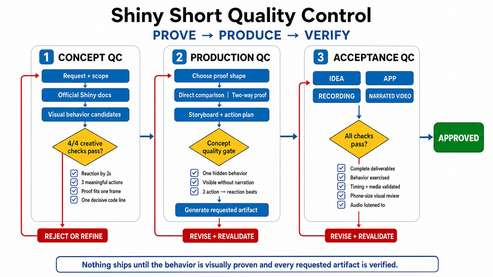

From Prompts to Loops
How we taught an AI agent to produce finished, narrated component videos — and why a really good prompt was never going to be enough
2026-07-25
The product: a 30-second video
One Shiny component. One hidden behavior. Thirty seconds.
A vertical, phone-first recording of a real running app
A visible cursor clicking, dragging, and typing — like watching over someone’s shoulder
A narrator whose words land exactly when the thing they describe happens on screen
A syntax-highlighted code card showing the one line that makes the trick work
The storyboard is always the same shape:
Problem → Reveal → Proof → Code → Payoff
…and none of those words ever appear on screen.
The promise: you type one sentence —
“/shiny-component-shorts make a video about value box sparklines in R”
— and a finished, narrated MP4 comes out.
The iceberg under 30 seconds
What has to be true, simultaneously, for one short to be shippable:
- The app runs and the behavior is real
- The demo makes the point without any words
- Narration is 60–85 words, all describing visible things
- Every click lands within one second of the sentence describing it
- The first action starts while the first sentence is still being spoken
- The cursor visibly travels to every target — no teleporting UI
- The code card is a verbatim slice of the app — honest line numbers included
- Top 20% and bottom 20% of frame stay empty for branding
- Only the official Shiny palette; accessible text contrast
- Audio mastered to broadcast loudness (−14 LUFS)
- No laughing, giggling, or robot weirdness in the voice
- The video outlives the narration by 1–3 seconds — never more, never less
That’s ~40 constraints. Across five different mediums: code, UI, motion, voice, and time.
Act I — “Just write a better prompt”
The prompt engineering era
What prompt engineering is
For the non-technical folks: prompt engineering is writing really good instructions for an AI — like leaving an extremely detailed note for a house-sitter.
You can’t watch them work. You can’t correct them halfway. Whatever you forgot to write down, they’ll improvise.
So the craft becomes: anticipate everything in advance and cram it into the note.
Technically: a single (or few-shot) text prompt to a large language model. The model reads it once and produces output in one pass.
No tools. No feedback. No second look at its own work. The quality ceiling is the prompt.
So we’d write The Mega-Prompt
You are an expert Shiny developer and video producer.
Create a 30-second vertical video about bslib value boxes.
RULES (follow ALL of them):
1. Write a complete, runnable Shiny for R app.
2. Use ONLY the Shiny palette: #007BC2 primary, #1D1F21 text on light...
3. Load Mona Sans at weights 400/500/600/700 and apply it to body,
button, input, select, AND textarea.
4. Keep the top 20% and bottom 20% of the frame empty.
5. Write 60-85 words of narration. Every sentence must describe
something literally visible on screen.
6. The first action must begin while the first sentence is spoken.
7. Each on-screen reaction must start within 1 second of the
sentence that describes it.
8. Show a code card with REAL lines from the app, correct line
numbers, and only the decisive line highlighted.
...
37. Do not laugh, giggle, or chuckle in the narration.
Now output: the app, the narration script, and the recording plan.Every rule on this slide is a real requirement in this repo. The prompt is fictional; the pain is not.
And honestly… it kind of works
The first output is often genuinely impressive:
- A plausible Shiny app
- Charming narration
- A reasonable-looking plan of clicks and waits
You demo it to your team. Everyone claps.
Then you run it.
The app has a typo in one selector. The narration is 97 words. The code card shows code that isn’t in the app. The “recording plan” says “click the reset button” — there is no reset button.
The model didn’t fail to understand. It failed to verify — because a one-shot prompt has no way to check anything.
Three structural cracks
It’s probabilistic. Ask twice, get two different apps. The house-sitter improvises differently every visit. With ~40 constraints, some subset gets dropped every single run — just a different subset each time.
It has no hands. A prompt can’t run the app, listen to the audio, or watch the recording. It can only predict what plausible output looks like. “Plausible” and “correct” diverge exactly where it hurts: selectors, line numbers, timing.
It can’t do time. Rule 7 — reactions within 1 second of their sentence — requires knowing how long the generated audio actually is. That number doesn’t exist until a real text-to-speech engine renders a real WAV. No prompt can contain a measurement of a file that doesn’t exist yet.
The third crack is fatal. Timing isn’t a knowledge problem — it’s a measurement problem. You can’t prompt your way to a measurement.
“Fine — then we’ll grade it”
The eval era
What an eval is
Plain version: an eval is a report card for AI output. You define what “good” means, generate a bunch of outputs, and score them.
It’s quality inspection at the end of the assembly line: the inspector tells you which cars are lemons. The inspector does not build cars.
Technically: a dataset of tasks + a set of graders. Graders are either programmatic (code that checks a fact: “is the narration 60–85 words?”) or model-based — an LLM-as-judge scoring fuzzy qualities (“is this hook compelling?”).
Headline metric: pass rate — what fraction of generations survive all graders.
The eval suite we’d have built
| # | Check | Grader type | How |
|---|---|---|---|
| 1 | App parses and runs | Programmatic | Launch it, hit the URL |
| 2 | Narration is 60–85 words | Programmatic | Word count |
| 3 | Only Shiny palette colors used | Programmatic | Regex the hex codes |
| 4 | Every planned selector exists in the app | Programmatic | Parse plan, grep source |
| 5 | Code card lines exist verbatim in app | Programmatic | String match + indentation |
| 6 | One trick, not a tutorial | LLM-as-judge | Rubric prompt |
| 7 | Hook is problem-led, not feature-led | LLM-as-judge | Rubric prompt |
| 8 | Sentences describe visible things | LLM-as-judge | Rubric prompt |
| 9 | Reactions land on their sentences | ??? | …can’t score a video that was never recorded |
| 10 | Voice has no giggles/truncation | ??? | …can’t listen to audio that was never generated |
Rows 1–8: a weekend of work. Rows 9–10: the actual product.
A typical scorecard
Run 47 of the mega-prompt, graded:
| Check | Verdict |
|---|---|
| App runs | PASS |
| Narration 60–85 words | PASS |
| Palette compliance | PASS |
| All selectors exist | FAIL #reset-btn not in app |
| Code card verbatim | FAIL invented a tidier version of line 128 |
| One trick only | PASS |
| Problem-led hook | WARN judge score 3/5 |
| Timing alignment | — not measurable |
Pass rate across 50 runs: 22%. Now what?
The eval dead end
With evals bolted onto one-shot prompting, your only move is:
Regenerate and pray. Sample until one output passes (best-of-k). Expensive, slow, and the passing sample is passing by luck.
Whack-a-mole prompting. Add rule 38 to fix selectors → the model drops rule 12 about fonts. The prompt grows; attention is finite.
Ship the unmeasurable. Timing and audio quality never get graded at all, because grading them requires making them.
The core diagnosis:
Evals put all the judgment at the end, after every decision has already been made.
A report card doesn’t teach. It just tells you which students to be sad about.
Act II — Loop Engineering
Move the inspectors onto the assembly line
The shape of the idea
Instead of one giant generation, the AI becomes an agent: it works in small steps, and after each step it runs a real check on the real artifact.
- Write the app → actually run it
- Generate the voice → actually measure it
- Plan the clicks → verify every selector on the live page
- Record the video → compare every timestamp against the audio
Any failure stops the line, with a specific error. The agent fixes that thing and re-runs that check.
The evals didn’t go away. Every grader from Act I still exists — but now it runs mid-process, as a gate the work cannot pass through until it’s true.
Prompt engineering asks: “how do I phrase the rule?” Loop engineering asks: “what would make this rule impossible to violate?”
Deterministic checks live in shared scripts — same inspector, every video. The agent brings creativity; the scripts bring certainty.
This repo, at a glance

The master contract: SKILL.md
A skill is a set of instructions the agent loads when a matching task appears — the house-sitter’s note, but versioned in git, tested in CI, and shared by every agent that ever works here.
Its opening section is literally titled “Core contract”:
- One video = one trick, not a tutorial
- Prove the trick on screen — comparison or two-way proof
- ≥ 3 meaningful actions, ≥ 3 visible state changes
- 9:16 vertical, 1440×2560, Shiny palette only
- “Run the bundled shared scripts; never generate a demo-specific recorder or validator”
That last rule is the quiet masterstroke.
If the agent wrote its own recorder each time, it could accidentally write one that agrees with its own mistakes.
Shared scripts mean the inspector is not an employee of the inspected.
Contract #1 — earn the idea
Before any code, the creative playbook forces a filter:
The proof rule. The behavior must become visible through interaction — no behavior that needs a paragraph of explanation before you can see it.
The comparison rule. The trick must survive being shown twice — repeated, reversed, or contrasted. One-off magic isn’t proof; it’s coincidence.
The honesty rule. If no behavior passes, the skill must say so and report near-misses — it is explicitly forbidden from manufacturing fake interactions to pad a weak idea.
Non-technical translation: the system is allowed to conclude “this component doesn’t have a good video in it.” A mega-prompt never says that — it always hands you something, confident to the last word.
Contract #2 — the frame is spoken for
Rules a designer would carry in their head, written as testable facts:
- 20/20 branding bands: top and bottom fifths of every frame stay empty — logos and captions get composited there later
- Font rotation: Mona Sans → IBM Plex Sans → Source Sans 3 → Manrope, in order, across a series — variety without randomness
- Palette:
#007BC2lead;#1D1F21text on light,#FFFFFFon dark — accessible contrast built into the rule itself
- No title on screen. No headline, no eyebrow, no “Episode 3” — the app starts directly with the component
- Stable IDs on every recorded target. No auto-generated Bootstrap IDs, because the recorder needs to find these elements later
- Nothing touches its border. ≥ 10 px breathing room inside every control, verified on a rendered screenshot
Notice the trick: each rule is phrased so a script or a screenshot can check it. Design taste, compiled into gates.
Contract #3 — the narration envelope
Narration is never “just the words.” Every video writes a four-part prompt envelope:
Audio profile:
A clear developer voice. Brisk, precise, warm, and not salesy.
No non-speech vocalizations.
Scene:
A store-revenue value box updates its total, percentage, and embedded
blue sparkline as the viewer switches among 7-, 90-, and 30-day windows.
Director's notes:
Use small pauses before reveals. Emphasize the surprising behavior.
Do not laugh, giggle, chuckle, or add any non-speech vocalization.
Transcript:
A KPI number tells you where revenue landed, but it hides how it got
there. [short pause] Switch to seven days, and this value box redraws
the whole recent shape...Real file: value-box-sparkline-shorts/artifacts/narration.txt. Even silent videos must write this envelope — because the script is also the timing plan.
The big inversion: record the voice first
Animation studios figured this out a century ago: record the voice actors first, animate to the track. Mouths can wait; sound cannot.
This repo does the same:
- Generate
narration.wav(Gemini TTS) — or import an existing take - Measure it — the real duration, the real pauses
- Only then choreograph the clicks against those measurements
- Only then record the video
This is the answer to Act I’s fatal crack.
The mega-prompt had to guess how long sentences take to say. The loop doesn’t guess — it renders the audio and asks ffprobe.
A measurement replaced a prediction. That swap is the whole philosophy in miniature.
Measuring speech with silence
How do you find sentence boundaries in an audio file? Look for the gaps.
Every silence ≥ 0.4 s at ≤ −30 dB marks a sentence break. Out comes a machine-readable map of when each sentence is spoken:
{
"duration_seconds": 28.12,
"sentence_windows": [
{"start": 0.0, "end": 3.12},
{"start": 3.58, "end": 5.11},
{"start": 5.82, "end": 10.27},
{"start": 10.98, "end": 13.12},
{"start": 13.70, "end": 15.21},
{"start": 16.13, "end": 17.97},
{"start": 18.44, "end": 20.49},
{"start": 21.42, "end": 28.12}
]
}Real output: artifacts/narration-timing.json from the value-box sparkline video. Eight sentences, 28.12 seconds, measured to the centisecond.
The timing contract, written down
Before touching a single wait, the agent must write the sentence-to-beat mapping at the top of the actions file. From the real repo:
# Sentence windows from artifacts/narration-timing.json (28.12 s total) and the
# beat assigned to each:
# w1 0.00– 3.12 "A KPI number tells you where revenue landed..." → cursor travels, 7-day click begins
# w2 3.58– 5.11 "Switch to seven days," → 7-day redraw lands here
# w3 5.82–10.27 "...Ninety days reveals the longer climb;" → 90-day click lands ~8.3 s
# w4 10.98–13.12 "thirty brings the working view back." → 30-day click lands ~11.1 s
# w5 13.70–15.21 "The chart isn't beside the card." → hover reaches the sparkline
# w7 18.44–20.49 "Pass a Plotly output to showcase," → code card starts ~17.9 sThe skill’s phrase for this: “Timing is then a hard contract, not a vibe.”
Writing the plan down before editing makes drift detectable: if the recording disagrees with this comment block, one of them is wrong — and you can tell which.
actions.yaml — a tiny language for a performance
actions:
- wait_for: "#revenue_box"
- wait: 1400
- click: "#window input[value='7']"
- wait: 2400
- click: "#window input[value='90']"
- wait: 2300
- click: "#window input[value='30']"
- hover: "#revenue_box .plotly"
- code:
title: "app.R"
start_line: 126
text: |2
showcase = plotlyOutput(...),
showcase_layout = "bottom",
- screenshot:
path: "artifacts/final.png"Eleven verbs, total: wait_for, wait, click, drag, select_option, hover, fill, type, press, code, screenshot.
type means a human typing — click, focus, caret to end, 35–70 ms per keystroke. fill is instant, reserved for paste-like moments. Even keystroke speed is a contract.
Waits must be 500–3000 ms and varied — let the biggest reveal breathe. The opening wait is capped: first action ≤ 1500 ms in, because the narrator has already started talking.
No zoom, ever — the recorder rejects camera punch-ins. Legibility must come from the app’s own type sizes.
The recorder: a robot camera operator
record_demo.py (~900 lines, shared by every video) drives a real Chromium browser via Playwright:
Boots the Shiny app itself — Python or R — retries flaky startups 3× with backoff, waits for the WebSocket session, and on teardown kills only the process it started. If the port is occupied, it refuses — it will never kill an unknown process to free a port.
Pre-flights every selector. Before the first click, it checks that every element the script will ever touch exists on the loaded page — and fails fast listing all missing ones. The Act I selector-typo bug is now impossible to hit mid-take.
Records at native 2× HiDPI — a 720×1280 layout captured as true 1440×2560, so text is phone-crisp without changing the composition.
Fail-fast is a kindness. Ten seconds of “selector #reset-btn not found” beats a four-minute recording that’s silently wrong.
The cursor you’d never think about
Playwright moves an invisible mouse. A video of a UI changing with no visible cause looks haunted.
So the recorder injects its own cursor — an SVG arrow drawn into the page:
What that buys, frame by frame:
- Ease-in-out motion — starts slow, speeds up, slows into the target. Robotic straight-line teleports scream “automation”
- Overshoot-and-settle — glides slightly past the target and eases back, the way a real hand does
- Press feedback — the cursor scales to 88% on click and emits a ripple pulse, so every click is visible in the final video
Nobody watching will ever notice this. That’s the point. You only notice cursors when they’re wrong.
The code card: honesty, enforced
During the code beat, a VS Code-style card types itself onto the screen. Its rules are strict:
- Every line must exist in the app source verbatim — the validator allows only one uniform dedent across the whole card, so relative indentation is preserved
start_linekeeps the gutter numbers honest — line 126 on screen is line 126 in the file- 6–14 dimmed context lines; only the decisive line or two highlighted
And the hold time is a formula, not a guess:
3200 + 55 × focus_chars + 14 × context_chars ms, clamped to 5.5–11 s
More code on screen ⇒ more reading time, automatically. Nobody is eyeballing “hmm, five seconds feels right.”
Why so strict? Because a viewer will pause the video and retype that code. If the card shows tidied pseudo-code, the video is lying.
The validator: Act I’s evals, moved into the loop
validate_demo.py runs after every recording. These are real checks from the source:
| Check | Rule |
|---|---|
| Meaningful actions | ≥ 3, or error |
| Narration length | 60–85 spoken words, or error |
| Narration envelope | Audio profile: / Scene: / Director's notes: / Transcript: all present — even for silent videos |
| Opening wait | > 2000 ms before first action ⇒ error |
| Idle waits | any single wait > 3000 ms ⇒ error |
| Resolution | must be 1440×2560 vertical (unless landscape was requested) |
| Video vs. audio length | video must outlive narration by 0.75–3.5 s |
| Dead air | > 8 s without a visible action while narration plays ⇒ error |
| Final screenshot | exactly one, targeting artifacts/final.png |
Compare with the Act I eval table — same checks, different address. Errors are blocking: the skill says “treat any validation error as incomplete work.”
Verifying sync against reality, not the plan
The recorder writes recording.json with an action_timeline — the actual start/end timestamp of every action in the trimmed video.
The validator then cross-references it against the audio’s sentence windows:
Every visible reaction must begin inside [sentence_start − 1.0 s, sentence_start + 0.5 s] of the sentence that describes it.
Asymmetric on purpose: a reaction may anticipate its sentence slightly (natural), but must never lag it (feels broken).
Also enforced, mechanically:
- First action must start before the first sentence ends
- Code card within 1 s of the sentence introducing the code
- No action after the narration ends — after the last word, only hold the payoff
- Any beat drifting > 1 s ⇒ adjust waits and re-record. “Do not ship a drifting take.”
Plan vs. reality, reconciled by script. The plan was a comment; the timeline is a measurement; the validator refuses to let them disagree.
The human gate — sealed with hashes
One step is deliberately not automated: a human (or the lead agent) must listen to the narration and review the timing plan before any recording happens.
But approvals go stale. So the approval is bound to SHA-256 fingerprints of exactly what was reviewed:
Change one byte of the audio, the timing report, or the actions file — and the approval silently no longer matches. The batch processor demands a fresh review.
Like a signature across the sealed flap of an envelope: reopen the envelope, break the signature.
“I approved it” always means “I approved this exact version.” No stale sign-offs, ever.
Scaling it: the batch processor
For a 5-video series, batch_process.py runs the loop as a pipeline with phases:
Phase narration: generate + measure all audio (3 TTS calls in parallel). Then a human reviews timing per video → hash-sealed approval.
Phase finish: record (max 2 concurrent browsers — more causes dropped frames), merge audio, validate. Validation re-runs even for cached recordings.
Content-hash caching: unchanged inputs ⇒ skipped TTS calls and re-records. Change one word of one script ⇒ only that video rebuilds.
Telling detail: the old --tts --merge one-shot flag was deprecated — because it skipped the timing-review gate. When a convenience shortcut and a quality gate conflicted, the shortcut lost.
Even the sound is a contract
merge_audio.py is a robot mastering engineer:
- Two-pass loudness normalization to −14 LUFS — the loudness target short-form platforms expect, so the video isn’t jarringly quiet next to the next one in the feed
- 70 Hz high-pass filter — trims inaudible rumble
- Short edge fades — no clicks at start/end
- 48 kHz / 192 kbps AAC; video stream copied untouched
And the skill explicitly forbids the shortcut:
“Do not hand-write a one-pass ffmpeg merge.”
The agent might know a quicker command. The loop doesn’t care. Known-good beats plausible — every time, by rule.
Contracts about the contracts
The repo’s tests/ folder holds the meta-level:
test_claude_skill_contract.pytest_skill_recording_contract.pytest_batch_process.py
These run in CI on every commit and assert that the instructions and the scripts still agree: the actions the docs describe are the actions the recorder accepts; the files the skill promises are the files the scripts produce.
Failure mode being prevented: documentation drift — someone improves the recorder, forgets the docs, and the agent starts following instructions for a tool that no longer exists.
The agent’s “employee handbook” is itself under test. The loop has a loop around it.
The whole loop, on one slide

Everything you’d have taken for granted
One finished 30-second short quietly contains all of this:
- A cursor that eases, overshoots, settles, and pulses on click
- Keystrokes at human speed — and instant fills only where a human would paste
- The first click already moving during the narrator’s first breath
- Sentence boundaries found by listening for silence
- Line numbers in the code card that match the real file
- A reading-time formula deciding how long code stays up
- Approvals that expire the instant anything they covered changes
- A recorder that would rather die loudly than kill your process
- Audio mastered to the same loudness as everything else in the feed
- A voice that is contractually forbidden from giggling
None of it is visible. All of it is why the video feels made rather than generated.
The two philosophies, side by side
| Prompt engineering | Loop engineering | |
|---|---|---|
| Quality lives in… | the phrasing of instructions | gates the work must pass through |
| Rules are… | requests the model tries to honor | checks that block progress until true |
| Timing | predicted from word counts | measured from rendered audio |
| Failure | discovered by the viewer | caught by the next gate, named specifically |
| Evals | report card after the fact | inspectors stationed inside the process |
| Reproducibility | every run is a new adventure | shared scripts + caches + hashes |
| Human review | read the final output and hope | scoped gates, sealed with content hashes |
| Cost of one more rule | crowds out the other 39 | one more check in a script — nothing forgotten |
Takeaways
Don’t ask the model to remember — build a gate that makes forgetting impossible.
Replace every prediction you can with a measurement. The audio’s length isn’t a guess; it’s an ffprobe call.
Keep the inspector independent of the worker. Shared scripts, never regenerated per task.
Automate the checks; hash-seal the judgment. Humans stay in the loop exactly where taste lives — and their approval dies the moment the artifact changes.
Your evals were right all along. They were just standing in the wrong place.
Go look for yourself
Everything in this talk is in the repo, runnable:
| Where | What |
|---|---|
.claude/skills/shiny-component-shorts/SKILL.md |
The master contract |
references/recording-contract.md |
Timing math, action semantics, sentence windows |
references/creative-playbook.md |
The proof rule and idea filters |
scripts/record_demo.py |
Playwright recorder — cursor injection around line 57 |
scripts/validate_demo.py |
Every gate from the validator slide |
scripts/batch_process.py |
Phases, caching, hash-sealed approvals |
*-shorts/actions.yaml |
Real timing contracts, comments and all |
*-shorts/artifacts/ |
Finished videos, timing JSON, cost reports |
Thanks! · Karan Gathani · github.com/…/shiny-component-shorts